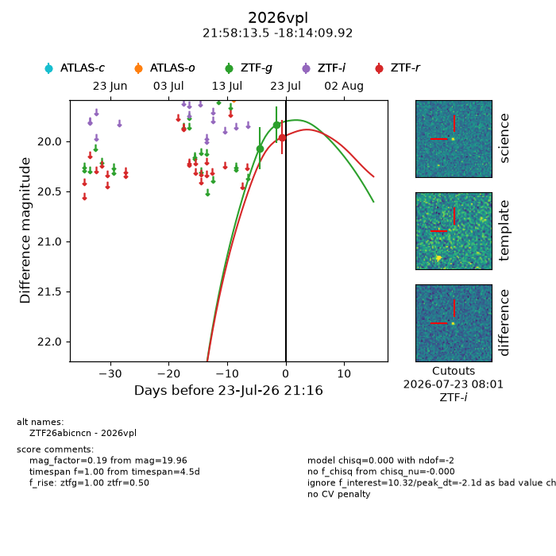
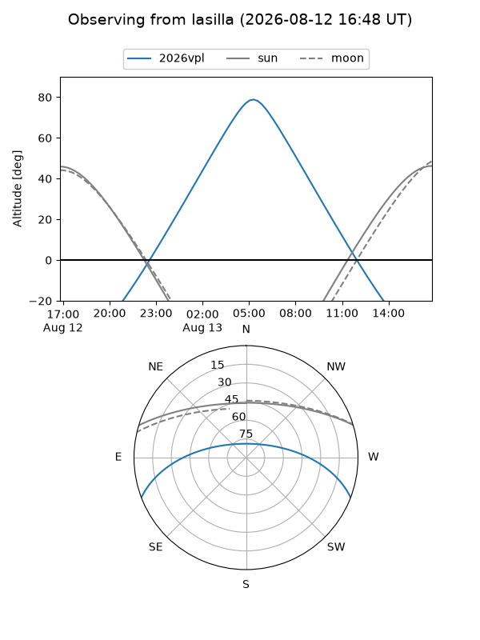
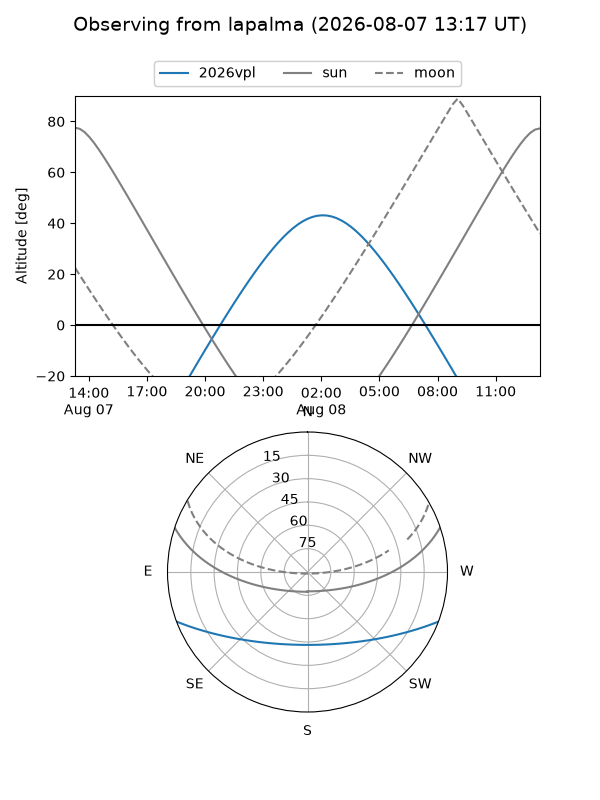
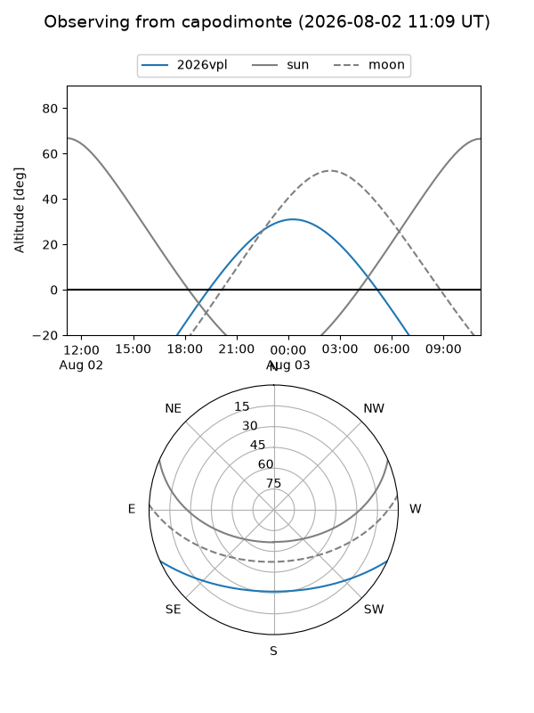
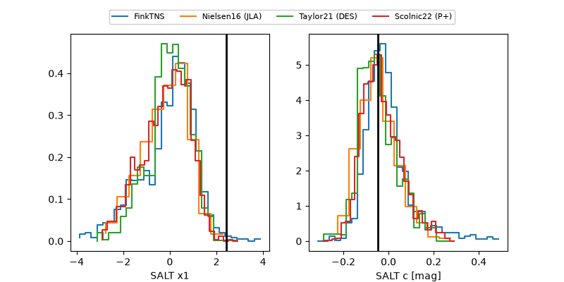

2026vpl
Target 2026vpl at 2026-07-23 21:19
Aliases and brokers:
FINK-ZTF: ztf.fink-portal.org/ZTF26abicncn
Lasair-ZTF: lasair-ztf.lsst.ac.uk/objects/ZTF26abicncn
ALeRCE-ZTF: alerce.online/object/ZTF26abicncn
YSE-PZ: ziggy.ucolick.org/yse/transient_detail/2026vpl
TNS name: wis-tns.org/object/2026vpl
Direct TNS query: direct search
alt names
ZTF26abicncn (ztf,fink_ztf)
2026vpl (tns,yse)
Coordinates:
equatorial (ra, dec) = 329.5564,-18.23609
equatorial (HMS+DMS) = 21:58:13.54,-18:14:09.92
galactic (l, b) = (36.1532,-49.27409)
Flags:
peak dt: -2.1
Photometry:
last ztfg=19.83, ztfr=19.96
2 ztfg, 1 ztfr detections
Lightcurve

Visibility



Additional plots
